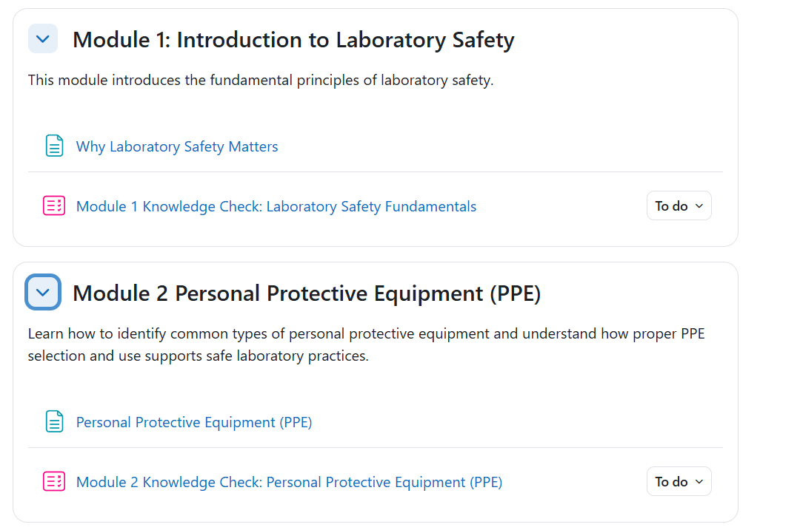

Moodle Course Development Project
A self-paced onboarding course designed for new employees working in medical laboratory environments.
The course introduces essential laboratory safety practices and prepares learners to apply safe workplace behaviors before beginning hands-on work.
This project demonstrates instructional design, learning experience design, assessment design, visual design, and Moodle course development skills.
The course is organized into four learning modules, with instructional pages, visual elements, and knowledge checks that reinforce learner understanding.
A final assessment requires learners to achieve a 100% score before the certificate of completion is released.
Moodle LMS was used as the course development and delivery platform.
Canva was used to create original visual elements that support learner engagement and course presentation.
1. Course Introduction
Demonstrates the Moodle course landing page, learner orientation, and initial navigation experience.
2. Course Structure (Modules 1–2)
Shows the Moodle course structure, including module organization and learner navigation through course content.

3. Course Structure (Modules 3–4)
Demonstrates continued Moodle course organization, showing how additional learning modules are structured and presented to learners.

4. Module 2 – PPE Content
Shows instructional content within Moodle, including learner-facing materials designed to support understanding of laboratory safety procedures.

5. Module 3 – Hazard Content
Demonstrates Moodle instructional content pages that present safety information and support learner understanding of workplace hazards.

6. Module 4 – Knowledge Check Introduction
Shows how Moodle can be used to create learner interactions and reinforce understanding through knowledge checks.